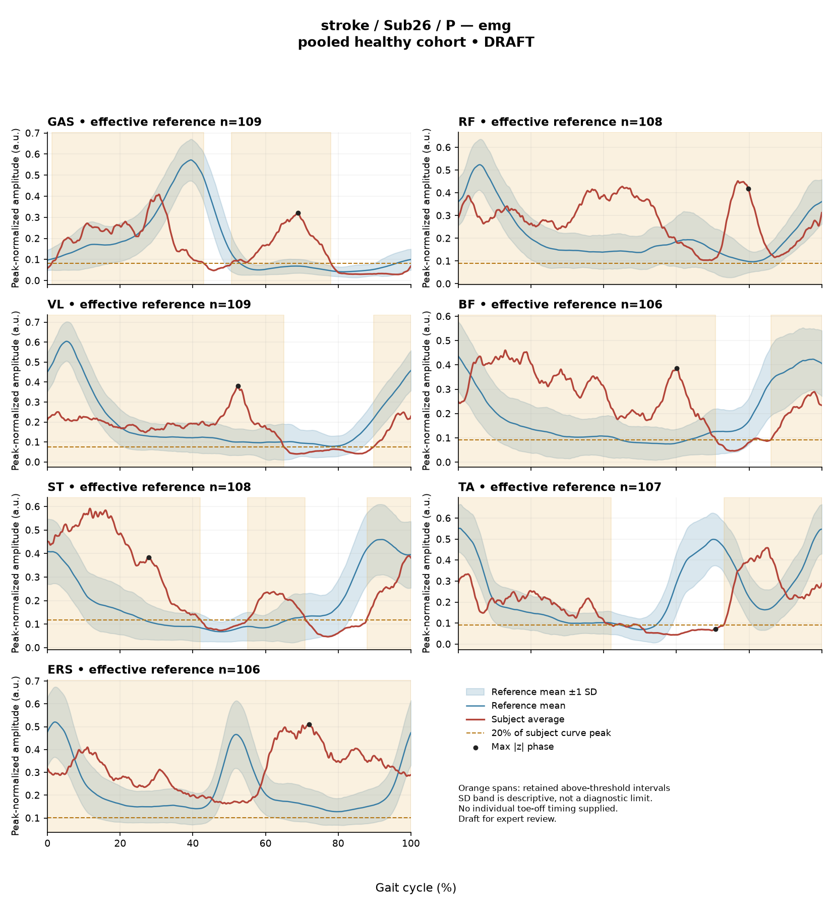

READD0B4DB3491299
rater1 / 90 of 150 / Case stroke_Sub26_P / Review row 91
Report: verbatim text
Text file for exact quotations# Gait Report Interpretation — Sub26_P
**Version:** limited-evidence-v3.1-candidate
**Scope:** Research interpretation of the supplied quantitative summary only. Not a diagnostic statement and not a basis for treatment selection.
---
## 1. Objective Findings
**Participant and side.** Sub26_P is a member of the stroke cohort; all data below are from the **paretic** side. The released cycle for this limb runs from one initial contact of the paretic limb (0%) to the next initial contact of the same limb (100%); these endpoints are successive occurrences of the same event, not a single instant. No intermediate gait event (including toe-off) and no matched muscle-specific normal timing reference were supplied with this task, so all timing below is expressed strictly as a percentage of the analysis cycle. Percentages are not converted to stance/swing or to any named sub-phase.
**Spatiotemporal values as supplied.**
- Gait speed **0.33 m/s**, which falls in the "household ambulator (<0.4 m/s)" speed band. This label denotes a speed range only; it carries no information here about walking independence, safety, assistive-device use, or real-world mobility.
- Cadence **87.5 steps/min**.
- Step length symmetry index **+16.1%** using the **successive-footfall** definition (each heel at its own initial contact). By the stated sign convention, a negative value indicates a shorter paretic step; this positive value therefore indicates the **paretic step is the longer of the two** under this definition. The alternative instantaneous-heel definition can yield a different value in some subjects and was not the definition used here.
- Composite sagittal kinematic deviation score ("GPS-like") **17.20** (RMS of the provided sagittal Gait Variable Scores; not the validated 9-variable GPS).
**Reference used and its limits.** Deviations were computed against **138 pooled healthy subjects, 1001 phase points (main_cohort_excel)**. That cohort pools both body sides and all ages and is not age- or speed-matched to this participant. Critically, the healthy reference self-selected speeds span **0.80–1.79 m/s**, and this subject walks at **0.33 m/s** — well below that floor. **No speed-matched healthy comparison exists in this dataset for this participant.** Every difference from the reference reported below therefore conflates slow-walking effects with any stroke-related control changes, and these data cannot separate the two. Deviation magnitudes are descriptive differences from an empirical reference; they do not by themselves establish a disease effect, a severity grade, or a clinical diagnosis.
**Channels available and not available.** Sagittal ankle, knee, hip and pelvis angles are supplied; coronal and transverse plane data are not part of this input. Seven EMG envelope channels are supplied (GAS, RF, VL, BF, ST, TA, ERS) with two co-contraction indices. Age, sex, gait events, time post-stroke, stroke clinical scores and non-paretic-side data are **not supplied in this task input**; that is not the same as documented absence from the source release, and they should not be described as missing from the dataset itself. Stride-level variability, raw-signal quality checks, individual toe-off and expert plots are likewise outside this input.
---
## 2. EMG Envelope and Threshold Findings
**How these numbers must be read.** The curves are **ensemble-averaged envelopes**, normalized to a shared maximum across available strides for that participant, side and muscle before averaging (no per-stride rescaling, no further amplitude normalization here). Amplitudes are therefore **relative envelope values** — not force, strength, or absolute neural drive — and cannot be used to rank muscles against one another. An "above-threshold interval" is a region where the **averaged** envelope exceeds 20% of that same curve's own peak, with a minimum retained length of 3% of the cycle. These intervals are properties of the mean curve under that rule: they are **not** physiological onsets or offsets, not evidence of continuous contraction, and not evidence of inactivity outside the interval. They also do not establish that any individual stride showed the same pattern. An interval written with start > end wraps the 100%→0% boundary; an onset of 0% is the analysis-window edge.
| Muscle | Retained interval(s) (% cycle) | Reported coverage | Peak norm. amplitude | Max abs z (direction, location) |
|---|---|---|---|---|
| GAS | 1–43; 51–78 | 69% | 0.41 | 7.7 above ref. at 69% |
| RF | 0–100 | 100% | 0.45 | 6.6 above ref. at 80% |
| VL | 90–65 (wraps) | 75% | 0.38 | 4.2 above ref. at 52% |
| BF | 86–71 (wraps) | 87% | 0.46 | 5.3 above ref. at 60% |
| ST | 55–71; 88–42 (wraps) | 70% | 0.59 | 3.7 above ref. at 28% |
| TA | 73–42 (wraps) | 72% | 0.46 | **3.5 below ref.** at 71% |
| ERS | 0–100 | 100% | 0.51 | 4.8 above ref. at 72% |
**Coverage and boundary continuity (mean-envelope level).** Five channels (VL, BF, ST, TA, and — as written across 0–100 — RF and ERS) are reported as remaining above their own 20% threshold across the cycle-defining initial-contact boundary. **GAS is the exception**: its earliest retained interval begins at 1%, numerically adjacent to but not spanning the 0%/100% boundary, and its two retained intervals (1–43 and 51–78) sum to the reported 69% coverage, so the averaged GAS envelope does include below-threshold regions between and after those intervals. For RF and ERS, coverage is reported as 100% with a 0–100 interval; at the precision displayed this is continuous supra-threshold behaviour of the mean curve across the whole analysis window, but a rounded 100% cannot by itself exclude a brief hidden below-threshold segment, and I do not classify it as such. For BF and TA, the reported coverage percentages are marginally larger than the arithmetic span of the single listed wrapping interval; the supplied values are reproduced as given rather than reconciled.
Six of seven channels show broad supra-threshold coverage of the averaged envelope (69–100%). This is a description of the mean curve under the stated 20%-of-own-peak rule; because the threshold is relative to each curve's own peak, high coverage indicates a comparatively flat, non-peaked mean envelope for that muscle, not high activation level. No timing here is labelled early, delayed, prolonged or normal, since matched muscle-specific timing references and individual event markers were not supplied. Anatomically, GAS acts as an ankle plantar flexor, TA as a dorsiflexor, RF and VL as knee extensors (RF also a hip flexor), BF and ST as knee flexors/hip extensors, and ERS as a trunk extensor — but no interval above is mapped to a functional task such as clearance, push-off or weight acceptance.
**Max |z| interpretation.** Max |z| is an **extreme-value statistic** — the largest standardized difference across all 1001 phase points — so the conventional 2-SD rule does not apply. In this dataset every one of 109 healthy controls exceeds |z| = 2 on at least one muscle, and the per-muscle healthy 95th percentiles for this statistic run from 3.65 (ERS) to 4.61 (TA), higher still under leave-one-out. Against that benchmark: **GAS (7.7), RF (6.6) and BF (5.3)** exceed even the highest per-muscle 95th percentile in the stated range; **ERS (4.8)** exceeds its own stated 95th percentile of 3.65; **TA (3.5)** falls below its own stated 95th percentile of 4.61; and **VL (4.2) and ST (3.7)** fall inside the 3.65–4.61 band, so without their specific per-muscle percentiles their standing is indeterminate. The location of each max |z| is where the **standardized** difference from the phase-specific reference mean is largest — not necessarily where the envelope peaks, and not a gait event. "Above reference" means above the reference **mean at that phase point**, not above a healthy percentile limit. All of this remains subject to the unmatched-speed limitation above.
**Co-contraction indices.** CCI is the Falconer–Winter index over the **full continuous envelopes** across the whole cycle (2 × common area / summed areas). It is a whole-cycle overlap index of normalized envelopes — not simultaneous activation time, not muscular force, not a phase-specific result — and it can be non-zero even where detected bursts do not overlap, because sub-threshold activity contributes. Values depend on the normalization and envelope pipeline and cannot be compared with values or thresholds from other studies or algorithms.
- **TA vs GAS = 0.62**, just above the upper endpoint of the supplied healthy interval (median 0.39; 2.5th–97.5th pct 0.24–0.59).
- **RF vs BF = 0.78**, inside the supplied healthy interval (median 0.68; 0.48–0.83) and closer to its upper endpoint.
Being inside that interval does not establish physiologically normal co-activation or normal muscle function; being outside it does not establish pathological co-activation, spasticity, stiffness, impaired motor control or any diagnosis. The same unmatched-reference and speed caveats apply to both indices.
---
## 3. Kinematic and Reference Comparisons
All angles are **sagittal plane only**; no coronal or transverse data are included, so no statement about frontal- or transverse-plane mechanics is possible.
| Channel (sagittal) | ROM (deg) | Gait Variable Score |
|---|---|---|
| Ankle | 18.4 | 13.06 |
| Knee | 42.7 | 24.14 |
| Hip | 29.4 | 20.68 |
| Pelvis | 4.6 | 1.61 |
**Composite (GPS-like) = 17.20**, the RMS of the four GVS values above, versus the supplied healthy composite reference (median 5.1, 95th percentile 10.7). The subject's composite is above that 95th percentile. Those figures are **pooled calibration percentiles**, not matched leave-one-out normal limits, and the reference is neither speed- nor age-matched to a 0.33 m/s walker; the comparison indicates a summary difference from that reference distribution, not a quantified disease effect.
Within the sagittal channels, the **knee** GVS (24.14) is the largest contributor to the composite, followed by **hip** (20.68) and **ankle** (13.06), with **pelvis** (1.61) contributing least. GVS and the GPS-like composite are **summary RMS differences from the reference mean waveform**: they do not indicate the direction of the deviation (e.g. more flexed vs more extended), do not localize it to any portion of the cycle, and do not identify a gait phase.
The ROM values are reported as measured. **No reference ROM values were supplied for these joints**, so no ROM figure here can be called restricted, excessive or normal; the small pelvic ROM (4.6°) and its low GVS are stated descriptively only. Nothing in this section, alone or combined with the EMG findings, establishes a mechanism, a lesion effect, or a clinical diagnosis.
---
## 4. Questions for Further Clinical Assessment
These are open questions raised by the limits of this dataset. None presupposes that the mechanism or measurement issue in question has been observed, and none implies a treatment.
1. Are **individual gait events** (particularly paretic toe-off) and matched muscle-specific normal timing bands available in the release? Without them, no interval above can be assigned to a gait phase or characterized as early, delayed or prolonged.
2. Are **stride-level EMG data and raw-signal quality records** retrievable for this participant? Ensemble-averaged envelopes cannot show stride-to-stride variability, and questions about electrode placement, crosstalk (e.g. between adjacent thigh or shank channels), artifact, or baseline offset can only be addressed from the raw traces — not asserted or excluded from this summary.
3. Is a **speed-appropriate comparison group** obtainable (healthy subjects walking at comparably slow speeds, or a within-dataset slow-walking subgroup)? This is the central limitation: at 0.33 m/s, slow-walking effects and stroke-specific changes cannot be separated using the 0.80–1.79 m/s reference.
4. Would the **non-paretic side** and the participant's **age, sex, time post-stroke and clinical scores** be available from the release? Note that the EMG normalization denominator is participant-, side- and muscle-specific and is not shared between sides, which constrains how directly side-to-side amplitude comparisons could be read.
5. Does the step-length asymmetry finding hold under the **instantaneous-heel definition** as well as the successive-footfall definition used here, and is it reproducible across sessions?
6. Would **coronal and transverse plane kinematics** and a full validated GPS add information about the knee and hip channels that carry the largest sagittal GVS values here?
7. On observational examination, does the participant's walking pattern correspond to any of the summary-level differences described above, and are there clinical findings (not assessable from these curves) relevant to interpreting them?
*Interpretation limits: this report describes an averaged-envelope and summary-kinematic dataset compared with an unmatched pooled reference. It does not establish normal or abnormal physiology, does not localize or grade impairment, and does not support a diagnostic conclusion.*Coverage rows
| Excel row | ID | Required content | Components |
|---|---|---|---|
| 516 | R079 | Describe walking speed 0.33 m/s and that it is below the stated 0.80 m/s reference floor; no reference at this speed is supplied. | AND: displayed speed and that it lies below the 0.80 m/s reference floor, so no speed-supported healthy reference exists in this dataset. Optional: cadence, speed-band label (not a functional claim). One sentence may also serve the comparability half of G03. |
| 517 | R080 | Identify knee AND hip as the principal sagittal GVS differences. Exact ordering is optional. Exact GVS values are optional; identify the findings as reference-relative sagittal summary differences. | AND: knee AND hip, no order. Stating which joint is larger is optional; asserting the reverse order is an error. Exact GVS values are optional; no waveform direction, phase or restriction is required. |
| 518 | R081 | Describe GAS envelope above its phase-specific reference mean at approximately 69% of the analysis cycle (displayed max |z| 7.7). Within each route, muscle identity AND mean-relative direction AND approximate cycle location are required. Exact max-|z| repetition is optional. | Required for each route: muscle identity AND direction relative to the phase-specific reference mean AND approximate cycle location. Optional: exact max |z| value, comparison with the supplied endpoint span (descriptive only). Prohibited: percentile classification, gait phase, physiological onset, severity. |
| 519 | R082 | Describe RF envelope above its phase-specific reference mean at approximately 80% of the analysis cycle (displayed max |z| 6.6). Within each route, muscle identity AND mean-relative direction AND approximate cycle location are required. Exact max-|z| repetition is optional. | Required for each route: muscle identity AND direction relative to the phase-specific reference mean AND approximate cycle location. Optional: exact max |z| value, comparison with the supplied endpoint span (descriptive only). Prohibited: percentile classification, gait phase, physiological onset, severity. |
| 520 | R084 | Describe the supplied successive-footfall step-length index 16.1% and its meaning: the paretic step is longer. | AND: displayed index and the direction supported by its sign. Optional: formula, definition wording. Acceptable phrasing for small displayed values: "a small difference with the paretic step slightly shorter/longer" (not a cutoff). Prohibited: restating the index as a percentage shortening (E01), severity grades, whole-gait symmetry generalization (E07 issue, not an omission). |
| 521 | G03 | Express a meaningful limitation of reference comparability AND why the comparison cannot establish disease effects or clinical diagnosis; for controls it cannot establish disease or overall normality. One statement may also support a case requirement. | AND: comparability and inference limitations |
Exact system input
Saved fileDraft a research gait-report interpretation for a physical therapist or physiatrist using only the supplied quantitative summary. This is a limited-evidence interpretation task, not diagnosis or treatment selection. Rules: - Describe the participant's actual group and side, available findings, and missing channels accurately. Healthy-group membership does not prove normal physiology; deviations from an empirical reference do not by themselves establish disease. - Treat detected EMG intervals and coverage as properties of an averaged envelope under the stated threshold and duration rule. Do not convert them into physiological onset, offset, duration, continuous contraction, or inactivity outside the intervals. You may describe reported coverage, retained intervals and boundary continuity at the mean-envelope level. Do not infer the same pattern in every individual stride. Say no below-threshold segment only when the supplied evidence establishes that; a rounded coverage value or no retained interval alone does not establish it. - Individual toe-off and matched muscle-specific timing references are not supplied in this task. Use percentages of the analysis cycle. When the input explicitly identifies an initial-contact boundary, you may name that boundary or describe numerical proximity to it. Do not assign stance/swing, loading response, pre-swing, mid-stance or another event to a percentage, or substitute a conventional 60% split. Anatomical muscle actions may be named, but do not map an interval to a gait-phase function such as clearance, push-off or weight acceptance. Do not characterize timing as normal, early, delayed or prolonged without the required evidence. - Respect the supplied normalization method. Relative envelope amplitude is not strength or force, and average curves do not establish stride-to-stride variability. - Report CCI as a whole-cycle overlap index of normalized EMG envelopes. You may compare it with the supplied empirical interval or a supplied median, including proximity to an endpoint. Do not invent an unavailable median. Being within that interval does not establish physiologically normal co-activation or normal muscle function; being outside it does not establish pathological co-activation, stiffness, impaired control or a diagnosis. CCI is not simultaneous activation time, muscular force or a phase-specific result. It depends on normalization and envelope methods; do not transfer values or thresholds from other studies or algorithms. - Describe GVS and GPS-like as summary differences from the stated reference. Neither localizes waveform direction or phase; ROM alone does not establish a clinical restriction without an appropriate comparison. Do not treat pooled calibration percentiles as matched leave-one-out normal limits. - Where using a reference comparison, convey both limited comparability and the inability to establish a disease effect or clinical diagnosis from that comparison. One clear explanation per report is enough; age and speed need not be recited as separate checklist words. A speed inside an overall range does not prove that an appropriate matched reference exists. Apply these limits to controls as well. - The location of maximum |z| is the largest standardized difference from the reference, not necessarily the time of peak envelope amplitude or a gait event. Above/below reference in an EMG row means relative to the phase-specific reference mean at that location, not relative to a healthy percentile limit. - Preserve numerical direction and the displayed precision. Do not invent values, clinical severity grades, statistical significance, or unavailable reference values. Descriptive comparisons with supplied values remain allowed. Near-boundary rounded values do not justify classifying hidden unrounded values. - Clinical follow-up questions may ask whether a mechanism or measurement issue exists; do not presuppose it has already been observed. Do not recommend treatment. If EMG is unavailable, section 2 may simply state that envelope timing, amplitude and CCI cannot be assessed. Reference-only plots do not provide patient EMG. Use exactly these four sections: 1. Objective Findings 2. EMG Envelope and Threshold Findings 3. Kinematic and Reference Comparisons 4. Questions for Further Clinical Assessment
Exact case input
Saved fileCandidate interpretation version: limited-evidence-v3.1-candidate
Draft the four-section report using only this subject's supplied evidence.
Metric definitions (read before interpreting any number below):
- All joint angles and ROM values are SAGITTAL PLANE only. Coronal/transverse data are not included.
- The released EMG curves are ensemble-averaged envelopes. For each participant and recorded muscle, normalization uses a shared maximum across the available strides before averaging; individual strides are not independently rescaled to their own peaks. This pipeline uses the released mean curves without further amplitude normalization. In the checked stroke release, the denominator is participant-, side-, and muscle-specific; it is not shared between sides. The local array audit verified 614 evaluable combinations, not all 700; 86 lacked valid nonzero paired samples. Amplitudes are relative envelope values, not absolute neural activation, force, or strength. Do not rank muscles as stronger or weaker from these amplitudes, or infer stride-to-stride variability from an average curve.
- Above-threshold intervals are the regions where the averaged envelope exceeds 20% of that curve's own peak, minimum retained interval 3% of the cycle (by sample count). An interval written as (X%-Y%) with X > Y wraps across the 100%->0% cycle boundary (envelope remains above threshold across the cycle-defining event). An onset of 0% is the analysis-window boundary, not necessarily a physiological onset. "No interval detected" means no region met the threshold + duration criteria; it does NOT mean the muscle is inactive or non-functional.
- CCI is the Falconer-Winter co-contraction index computed on the full continuous envelopes (2*common area / summed areas), so it can be non-zero even when the DETECTED burst intervals of the pair do not overlap (sub-threshold activity contributes).
- The composite kinematic deviation score is the RMS of the per-joint Gait Variable Scores over the sagittal channels provided ("GPS-like", not the validated 9-variable GPS).
- Step length symmetry index: 200*(paretic - non-paretic)/(paretic + non-paretic), in %. NEGATIVE means the paretic-side step is SHORTER. Two operational step-length definitions exist (successive-footfall: each heel's position at its own initial contact; instantaneous: both heels at the same instant) and give different values for some subjects -- the definition actually used is stated next to the symmetry value.
- "Max |z| deviation" is the LARGEST absolute z-score across all 1001 phase points of the cycle, comparing this curve to the healthy-cohort mean/SD at each phase. This is an extreme-value statistic, NOT a single-observation z-score: in this dataset every one of 109 healthy controls exceeds |z| = 2 on at least one muscle, and per-muscle healthy 95th percentiles for this statistic run 3.65 (ERS) to 4.61 (TA) -- higher still under leave-one-out. Do not label a value abnormal by the conventional 2-SD rule; use the healthy reference range given per muscle where provided.
- Healthy-cohort CCI reference (this dataset): RF-vs-BF median 0.68 (2.5th-97.5th pct 0.48-0.83); TA-vs-GAS median 0.39 (0.24-0.59). Composite score reference: median 5.1, 95th percentile 10.7.
- COHORT BACKGROUND (calibration context, not necessarily the exact reference used for this subject -- the actual reference composition is stated in a dedicated line with the subject data below): the full healthy cohort is 138 subjects for kinematics, effective n = 106-109 per muscle for EMG (29 controls have no usable EMG; completeness varies by age), pooling both body sides and all ages; it is not age- or speed-matched to this subject. A leave-one-out run uses one subject fewer than these counts.
- SPEED SUPPORT LIMIT (applies to most stroke subjects in this dataset): the healthy reference cohort's self-selected walking speeds span 0.80-1.79 m/s. If this subject's gait speed is below 0.80 m/s, NO speed-matched healthy reference exists in this dataset -- 41 of the 50 stroke subjects are below that floor. Deviations from the reference then conflate slow-walking effects with stroke-specific control changes, and the two cannot be separated from these data. Describe deviations from the reference as such; do not attribute them wholly to stroke pathology.
- Additional source fields are outside this input. Age, sex and gait events may be available in the release; time post-stroke, stroke clinical scores and a non-paretic-side designation apply only to the stroke cohort, as applicable. Do not claim every listed field exists for every participant. Distinguish not supplied, not applicable and documented absent recordings.
The released paretic-side cycle runs from initial contact of that limb at 0% to its next initial contact at 100%. The cycle boundary may be called initial contact; the endpoints are successive occurrences, not one instant. No intermediate event or phase boundary is supplied.
Model-visible information boundary: the summary contains mean-curve metrics and algorithm-detected intervals, not individual toe-off, matched normal muscle timing, stride-level variability, raw-signal quality checks, or expert plots. Information not supplied here must not be described as absent from the source dataset. Gait-cycle percentages alone do not identify gait phases.
Subject: Sub26_P (group: stroke, affected side: paretic)
Gait speed: 0.33 m/s (household ambulator (<0.4 m/s)) [The ambulation label denotes a speed band only, not measured walking independence, safety or real-world community mobility.]
Cadence: 87.5 steps/min
Step length symmetry index: 16.1% (step-length definition: successive_footfall)
Composite kinematic deviation score (GPS-like): 17.20
Deviation reference actually used for this subject: 138 healthy subjects (pooled), 1001 phase points, source: main_cohort_excel.
EMG envelope findings:
- GAS: above-threshold interval(s) 1%-43%; 51%-78%, 69% of cycle above threshold, peak normalized amplitude 0.41, max |z| vs healthy reference: 7.7 (above reference, at 69% of cycle)
- RF: above-threshold interval(s) 0%-100%, 100% of cycle above threshold, above threshold across cycle boundary, peak normalized amplitude 0.45, max |z| vs healthy reference: 6.6 (above reference, at 80% of cycle)
- VL: above-threshold interval(s) 90%-65% (wraps cycle boundary), 75% of cycle above threshold, above threshold across cycle boundary, peak normalized amplitude 0.38, max |z| vs healthy reference: 4.2 (above reference, at 52% of cycle)
- BF: above-threshold interval(s) 86%-71% (wraps cycle boundary), 87% of cycle above threshold, above threshold across cycle boundary, peak normalized amplitude 0.46, max |z| vs healthy reference: 5.3 (above reference, at 60% of cycle)
- ST: above-threshold interval(s) 55%-71%; 88%-42% (wraps cycle boundary), 70% of cycle above threshold, above threshold across cycle boundary, peak normalized amplitude 0.59, max |z| vs healthy reference: 3.7 (above reference, at 28% of cycle)
- TA: above-threshold interval(s) 73%-42% (wraps cycle boundary), 72% of cycle above threshold, above threshold across cycle boundary, peak normalized amplitude 0.46, max |z| vs healthy reference: 3.5 (below reference, at 71% of cycle)
- ERS: above-threshold interval(s) 0%-100%, 100% of cycle above threshold, above threshold across cycle boundary, peak normalized amplitude 0.51, max |z| vs healthy reference: 4.8 (above reference, at 72% of cycle)
Co-contraction indices:
- TA_vs_GAS: CCI = 0.62
- RF_vs_BF: CCI = 0.78
Joint kinematic findings (sagittal plane):
- AnkleAngles: range of motion 18.4 deg, Gait Variable Score 13.06
- KneeAngles: range of motion 42.7 deg, Gait Variable Score 24.14
- HipAngles: range of motion 29.4 deg, Gait Variable Score 20.68
- PelvisAngles: range of motion 4.6 deg, Gait Variable Score 1.61Reference card
Saved file# Reference context: stroke/Sub26_P Mean/SD reference: 138 controls; method pooled; exclusions: []. Effective reference counts: GAS=109, RF=108, VL=109, BF=106, ST=108, TA=107, ERS=106, AnkleAngles=138, KneeAngles=138, HipAngles=138, PelvisAngles=138. The exact system and user input files define what the model receives. The EMG and kinematic plots are supplementary expert evidence, not model inputs. The plotted mean plus/minus one SD is descriptive, not a clinical normal band. Negative lower EMG bands can result from mean minus SD; they do not imply negative recorded EMG. The max-|z| p95 span in the input is pooled calibration context. Complete muscle-specific LOO thresholds are not supplied; an appropriately indeterminate classification is allowed. Controls are excluded from their own mean/SD reference, but cohort-level calibration has prior reference-data reuse. It is not an independent matched clinical limit. GPS-like is a four-channel sagittal composite, not the validated nine-variable GPS. The pooled median/p95 background is not a matched LOO normality boundary. CCI uses continuous normalized envelopes over the whole analysis cycle. An empirical interval comparison does not establish normal muscle function. Threshold intervals and rounded coverage describe the averaged envelope. Rounded 100% coverage and one interval do not prove absence of short below-threshold gaps. Use the group-specific cycle and normalization provenance in the actual input. No individual intermediate gait events or matched normal muscle timing are supplied. Administrative age and published bilateral speed are not added to this input. Expert-visible plots do not justify requiring unseen direction, phase or morphology. For a new-case requirement, cite exact input evidence. Select clinically useful descriptive content without inferring a diagnosis or severity from rank alone.
Expert reference curves
Only text inputs were supplied to the model. Do not require curve-only findings.
EMG

Kinematics